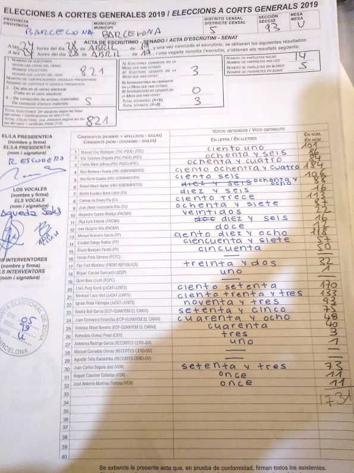

Greenpeace
Más del 5% de las noticias recibidas en en el análisis realizado por Greenpeace cuestiona el papel del sistema electoral: encuestas sobre intención de voto falsas o tendenciosas, informaciones sobre posibles pucherazos...
14:10

Reenviado
OJO!!!!!Están en las redes sociales hablando de boicotear a Vox en las próximas elecciones. El tema es coger los tacos de papeletas oficiales de Vox de las cabinas y de las mesas para sustituirlos, sin que se den cuenta , por otras papeletas parecidas pero que no son las oficiales. Así confundirían a la gente para q luego, cuando la mesa electoral haga el recuento de votos, la papeleta de Vox no sea la oficial y anularlo. ¡Mucho cuidado con esto!
PASALO üí™üèªüí™üèª üá™üá∏üá™üá∏
12:49
Greenpeace
Durante la campaña electoral del 28A los bulos iban dirigidos a modificar la intención del voto. Tras ella, ponen en duda el resultado de las mismas con noticias sobre un posible fraude o ‘pucherazo’.
14:10
Greenpeace
Sembrar dudas sobre el sistema electoral es una manera deslegitimar una de las herramienta democráticas que disponemos.
14:10
Greenpeace
A la desconfianza institucional de la ciudadan√≠a con baja intenci√≥n de voto, se suma otra barrera más: el posible fraude del resultado. üò® üò®
14:10
Reenviado
La Junta Electoral investiga el posible 'pucherazo' del voto nulo que aupó a la izquierda.
periodistadigital.com
La Junta Electoral investiga el posible 'pucherazo' del voto nulo que aupó a la izquierda.
DUDOSO RECUENTO. La Justicia atiende a la denuncia que ha presentado Vox.
https://www.periodistadigital.com/politica/partidos-politicos/2019/04/30/la-junta-electoral-investiga-el-posible-pucherazo-del-voto-nulo-que-aupo-a-la-izquierda.shtml
12:46
Greenpeace
Especular sobre la posibilidad de un ‚Äòpucherazo‚Äô puede provocar mayor inmovilismo social y desconfianza. üëÄ
14:10
CENSO: 36.893.976 personas con derecho a voto.
PARTICIPACIÓN: 75,75%
NºTOTAL DE VOTOS: 26.361.051
Pero.... El 75,75% de 36.893.976 = 27.947.186 votos.
27.947.186 - 26.361.051 = 1.586.135 personas ¿desaparecidas?
12:46
Reenviado

Doble de votos que censados.
12:45
Greenpeace
Este análisis de Greenpeace ha sido posible gracias al trabajo del voluntariado como observadores de diferentes listas de difusión de WhatsApp, y al envío de socios y socias a nuestro BuloBlocker o número de WhatsApp que Greenpeace habilitó para recibir bulos durante la campaña electoral.
14:10